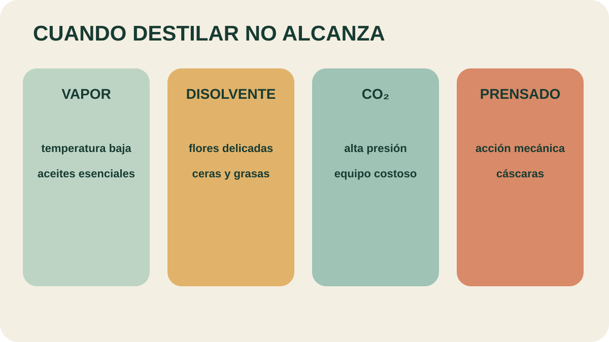

Módulo 18 · 25 minutos
Cuando destilar no alcanza: disolventes, CO₂ y prensado
Al terminar, vas a poder comparar métodos alternativos por temperatura, pureza, costo y riesgo.
El jazmín no entra en la regla
Una flor puede contener un aroma extraordinario y, aun así, no entregarlo bien al vapor. Algunas no liberan aceite por destilación; otras producen un resultado deteriorado. Cuando el método principal falla, el oficio no fuerza a la planta: cambia la forma de extraer.
Un repertorio más amplio
Además del arrastre de vapor, la destilación simple, fraccionada y al vacío, existen extracción con disolventes volátiles, fluidos supercríticos, expresión manual, prensado, maceración en frío o calor, co-destilación y . Los nombres no son equivalentes: cada operación produce materiales con características propias.
Disolventes: captar más de lo buscado
En la extracción con disolventes, la muestra seca y molida entra en contacto con sustancias como alcohol o cloroformo, capaces de solubilizar la fracción aromática. El problema es su falta de exclusividad: también pueden extraer grasas y ceras. El resultado es una esencia impura que necesita etapas posteriores.
Los solventes elevan el costo y exigen un manejo cuidadoso porque pueden ser tóxicos, peligrosos e inflamables. Además, una traza residual puede alterar el aroma. Aun así, el método produce olores muy característicos y reemplazó en buena medida a la maceración con grasas calientes y al enfleurage.
Una no debe confundirse automáticamente con un aceite destilado. Las pertenecen a otra familia cercana y son importantes en especias como pimienta, canela, paprika, jengibre, cúrcuma, nuez moscada y clavo.
CO₂ supercrítico: presión en lugar de calor intenso
En este método el vegetal se corta, licua o muele y se empaca en una cámara de acero inoxidable. A través de él circula CO₂ en estado de . El fluido solubiliza y arrastra las esencias.
Después se elimina mediante descompresión progresiva hasta volver a condiciones ambientales. El solvente puede reciclarse, el rendimiento es alto y las bajas temperaturas ayudan a conservar las propiedades químicas. La contrapartida es el equipo: bombas de alta presión y cámaras resistentes encarecen la instalación.
Expresión y prensado
La expresión manual y el prensado forman parte del repertorio cuando el material permite liberar la fracción aromática por acción mecánica, como ocurre con cáscaras. No necesitan convertir primero la esencia en vapor. El criterio sigue siendo el mismo: conocer dónde está el aroma y elegir una fuerza capaz de separarlo sin destruirlo.

Elegí la renuncia aceptable
Buscá el método de baja temperatura y alto costo de equipo. Después encontrá el que evita disolventes pero solo sirve para ciertos materiales. ¿Qué criterio priorizarías para una flor delicada?
Todos los aceites obtenidos mediante estos procesos atraviesan filtraciones sucesivas para eliminar impurezas. La extracción no termina cuando aparece el aroma: termina cuando el producto puede describirse, separarse y conservarse con claridad.
Actividad · Tres materiales
Recomendá un método para jazmín, lavanda en flor y cáscara de naranja. Para cada elección escribí: propiedad del material, temperatura esperada, equipo principal y una desventaja. No prometas pureza absoluta: explicá qué etapa posterior necesitaría el producto.
Del método a la cuenta
El proceso ya tiene nombre, equipo y límites. Pero una extracción solo puede evaluarse cuando las gotas se comparan con la cantidad de planta que entró. Falta traducir volumen en masa y masa en porcentaje.
Guardá esta estación
Cuando puedas explicar la idea central con tus propias palabras, marcá el módulo como completado.